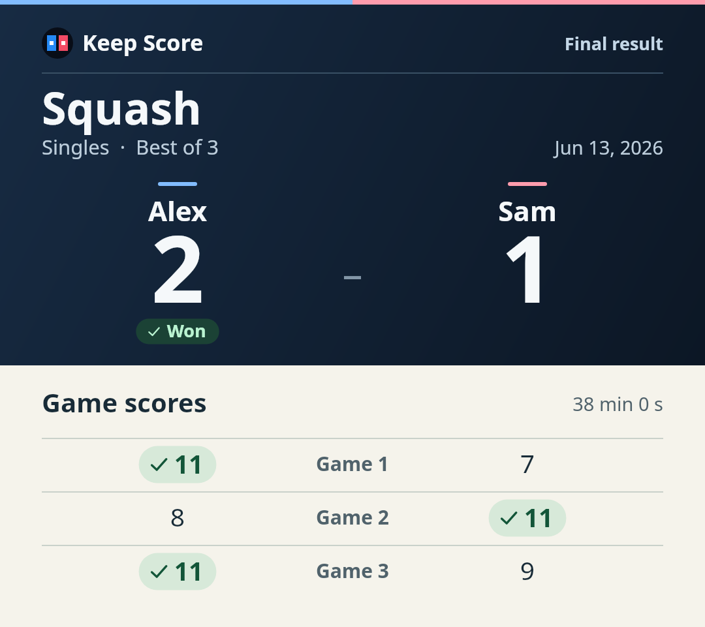

Match journal on your phone or tablet
Review the score from each game, then save a scorecard to share with your opponent.
On your watch, open Results → Options → View results on phone. Scan the QR code to view or edit the match.
Download the example scorecard
